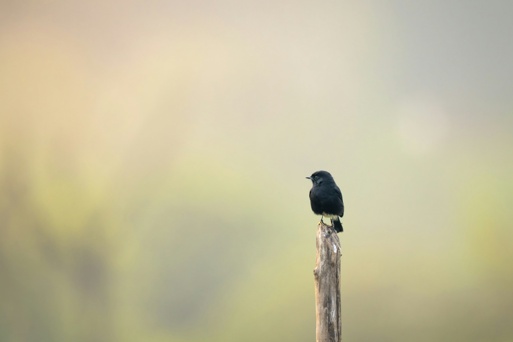

The Pied Bushchat is a small, lively songbird commonly found in open grasslands, scrublands, farmland, and rocky areas. The male is strikingly dark with a black head, back, wings, and breast, contrasted by a white rump and patches on the wings and lower body. Females are generally brown and less boldly marked. Pied Bushchats often perch prominently on bushes, fences, rocks, and posts while watching for insects. They feed mainly on insects and other small invertebrates, frequently making short flights from a perch to catch prey before returning to the same or another nearby perch.
Family: Muscicapidae